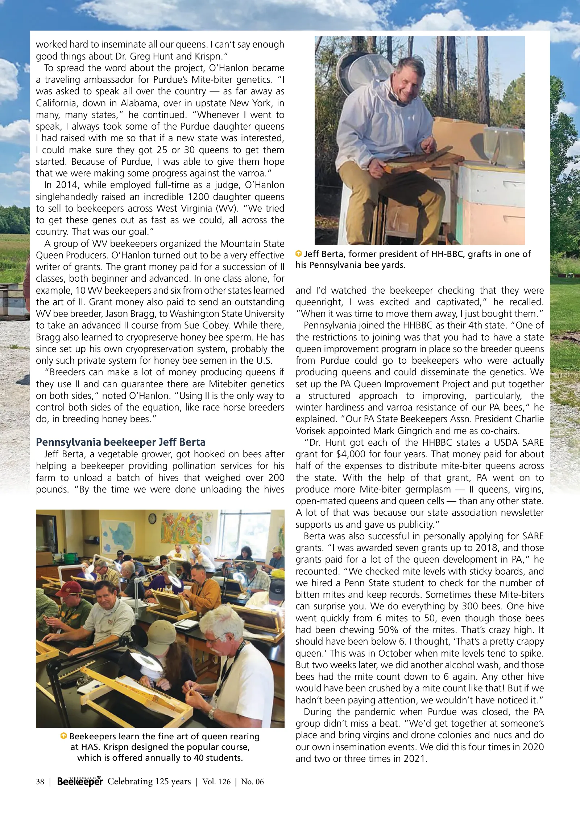

worked hard to inseminate all our queens. I can’t say enough
good things about Dr. Greg Hunt and Krispn.”
To spread the word about the project, O’Hanlon became
a traveling ambassador for Purdue’s Mite-biter genetics. “I
was asked to speak all over the country — as far away as
California, down in Alabama, over in upstate New York, in
many, many states,” he continued. “Whenever I went to
speak, I always took some of the Purdue daughter queens
I had raised with me so that if a new state was interested,
I could make sure they got 25 or 30 queens to get them
started. Because of Purdue, I was able to give them hope
that we were making some progress against the varroa.”
In 2014, while employed full-time as a judge, O’Hanlon
singlehandedly raised an incredible 1200 daughter queens
to sell to beekeepers across West Virginia (WV). “We tried
to get these genes out as fast as we could, all across the
country. That was our goal.”
A group of WV beekeepers organized the Mountain State
Queen Producers. O’Hanlon turned out to be a very effective
writer of grants. The grant money paid for a succession of II
classes, both beginner and advanced. In one class alone, for
example, 10 WV beekeepers and six from other states learned
the art of II. Grant money also paid to send an outstanding
WV bee breeder, Jason Bragg, to Washington State University
to take an advanced II course from Sue Cobey. While there,
Bragg also learned to cryopreserve honey bee sperm. He has
since set up his own cryopreservation system, probably the
only such private system for honey bee semen in the U.S.
“Breeders can make a lot of money producing queens if
they use II and can guarantee there are Mitebiter genetics
on both sides,” noted O’Hanlon. “Using II is the only way to
control both sides of the equation, like race horse breeders
do, in breeding honey bees.”
Pennsylvania beekeeper Jeff Berta
Jeff Berta, a vegetable grower, got hooked on bees after
helping a beekeeper providing pollination services for his
farm to unload a batch of hives that weighed over 200
pounds. “By the time we were done unloading the hives
and I’d watched the beekeeper checking that they were
queenright, I was excited and captivated,” he recalled.
“When it was time to move them away, I just bought them.”
Pennsylvania joined the HHBBC as their 4th state. “One of
the restrictions to joining was that you had to have a state
queen improvement program in place so the breeder queens
from Purdue could go to beekeepers who were actually
producing queens and could disseminate the genetics. We
set up the PA Queen Improvement Project and put together
a structured approach to improving, particularly, the
winter hardiness and varroa resistance of our PA bees,” he
explained. “Our PA State Beekeepers Assn. President Charlie
Vorisek appointed Mark Gingrich and me as co-chairs.
“Dr. Hunt got each of the HHBBC states a USDA SARE
grant for $4,000 for four years. That money paid for about
half of the expenses to distribute mite-biter queens across
the state. With the help of that grant, PA went on to
produce more Mite-biter germplasm — II queens, virgins,
open-mated queens and queen cells — than any other state.
A lot of that was because our state association newsletter
supports us and gave us publicity.”
Berta was also successful in personally applying for SARE
grants. “I was awarded seven grants up to 2018, and those
grants paid for a lot of the queen development in PA,” he
recounted. “We checked mite levels with sticky boards, and
we hired a Penn State student to check for the number of
bitten mites and keep records. Sometimes these Mite-biters
can surprise you. We do everything by 300 bees. One hive
went quickly from 6 mites to 50, even though those bees
had been chewing 50% of the mites. That’s crazy high. It
should have been below 6. I thought, ‘That’s a pretty crappy
queen.’ This was in October when mite levels tend to spike.
But two weeks later, we did another alcohol wash, and those
bees had the mite count down to 6 again. Any other hive
would have been crushed by a mite count like that! But if we
hadn’t been paying attention, we wouldn’t have noticed it.”
During the pandemic when Purdue was closed, the PA
group didn’t miss a beat. “We’d get together at someone’s
place and bring virgins and drone colonies and nucs and do
our own insemination events. We did this four times in 2020
and two or three times in 2021.
Beekeepers learn the fine art of queen rearing
at HAS. Krispn designed the popular course,
which is offered annually to 40 students.
Jeff Berta, former president of HH-BBC, grafts in one of
his Pennsylvania bee yards.
38 |
Celebrating 125 years | Vol. 126 | No. 06